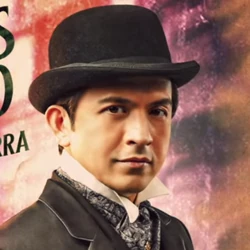
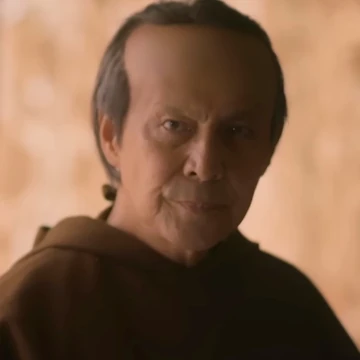

CHARACTERS IN NOLI ME TANGHERE |
|  |
Crisostomo Ibarra |
He is an intelligent young manStudied abroad for seven years in Europe |
|
Maria Clara |
She is known to have a high social status Her father is Captain TiagoIbarra had a relationship with her later in the story |
|  |
Padre Damaso |
Damaso is a corrupt Spanish priest who is living within the Filipino crowdHe is secretely the biological father of Maria Clara |
go to: Top